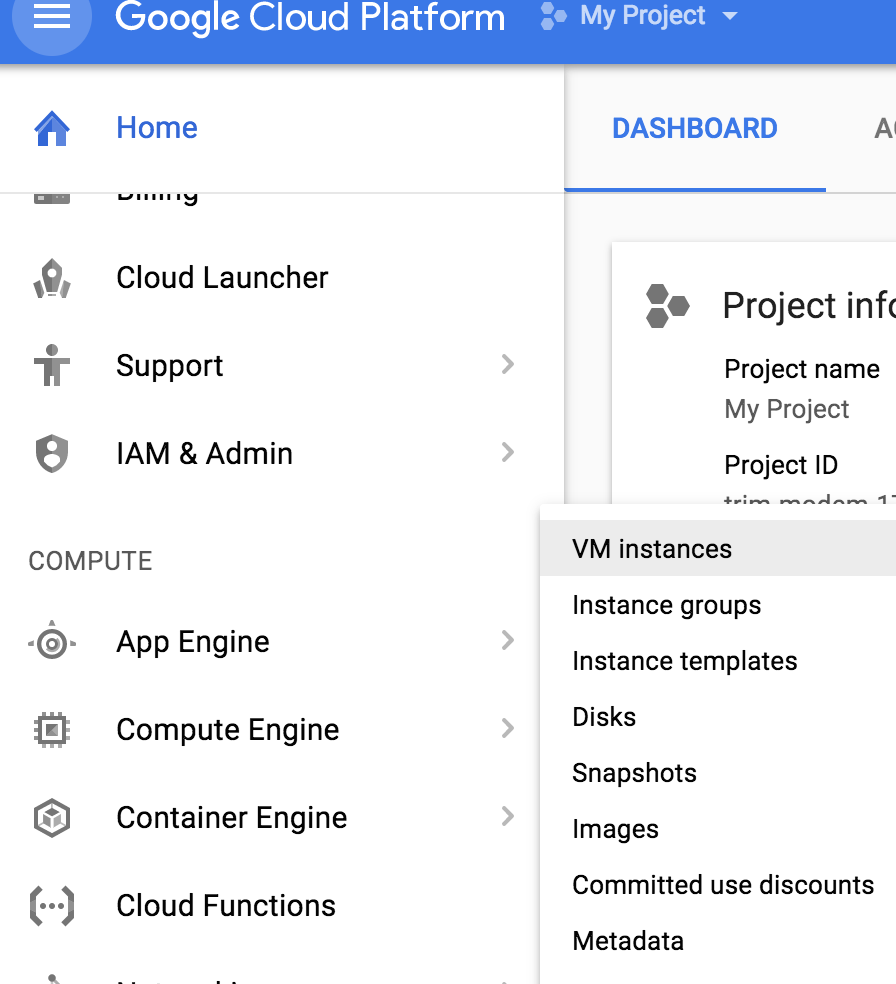
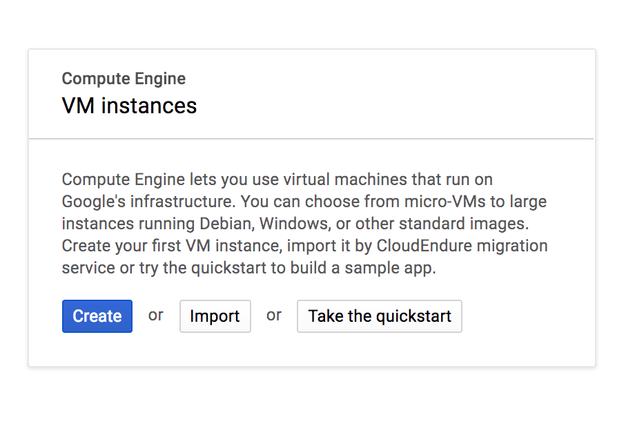
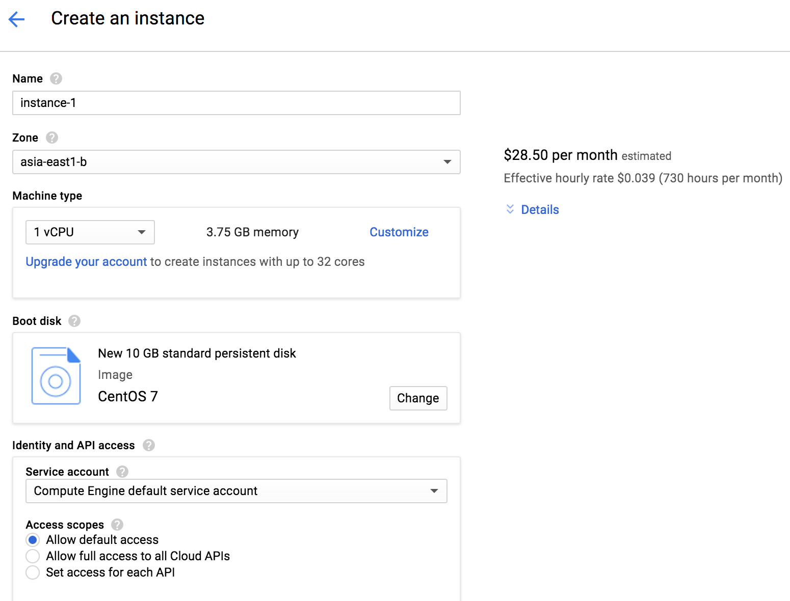
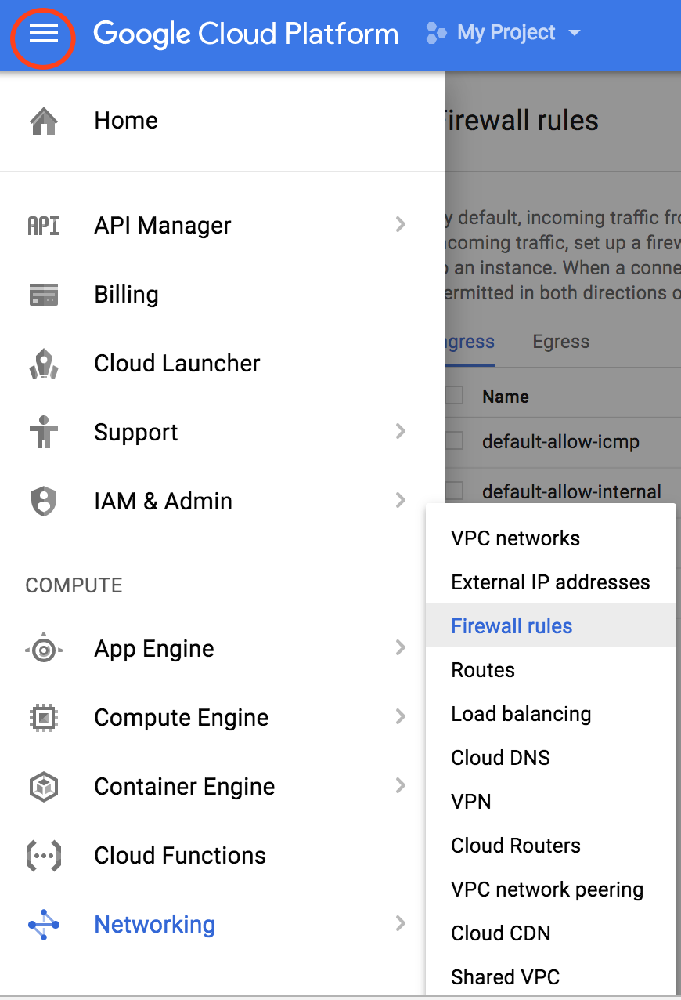
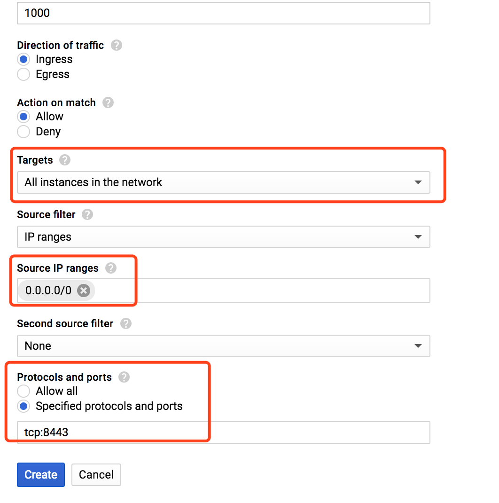
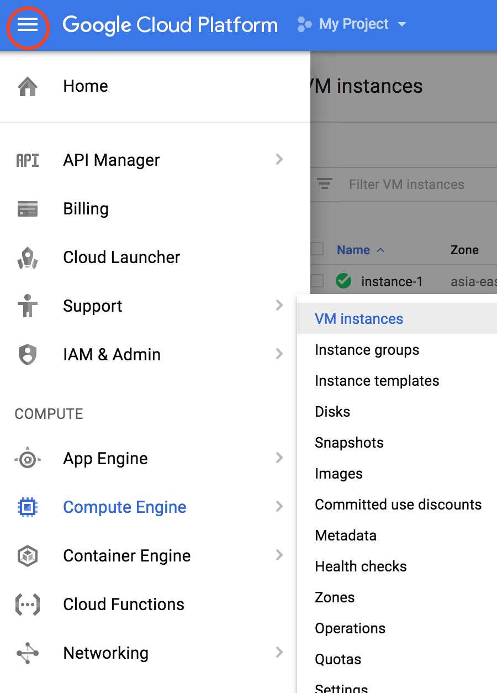
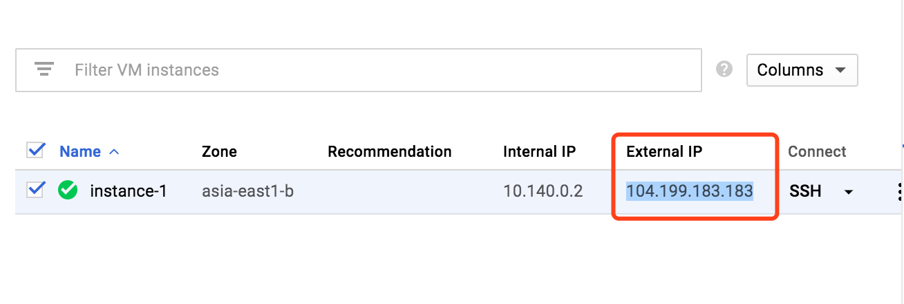

由于购买的 shadowsocks 服务不是很稳定，偶尔会抽风，速度也不可观，因此萌发了自己搭建 shadowsocks 服务的想法。正好发现 gcloud 提供免费一年的服务试用，所以我们可以使用 google 的云服务器来搭建自己的 shadowsocks 服务。测试之后发现结果确实比购买的服务好很多，速度可以支持 youtube 以1080画质稳定播放视频。
所需条件：
- 需要一个 google 账号。
- 目前能访问 gcloud 网站。（可以使用 hosts 文件，购买的 shadowsocks 服务或者 VPN）
- 需要一张 Visa 或者 Master 的信用卡，信用卡不会被主动扣费，只是激活免费账户是需要该信息，一年免费期到了之后取消服务即可。
首先访问 https://console.cloud.google.com，并登陆 google 账户。
可以看到 gcloud 的优惠信息展示在页面最上面。

点击 SIGN UP FOR FREE TRAIL 的按钮然后选择同意服务来下一步。 填写地址和信用卡信息，按 google 的说法，即使你用完了预赠的300美元，google 也不会在你主动给出允许之前扣你的信用卡，所以即使是服务到期或者花完了免费的额度也不用担心。填完之后就可以开启免费服务。
然后可以看到欢迎信息，如果你想更全面地了解一下 gcloud，可以点左边的 TOUR THE CONSOLE, 不然就点右边的 GOT IT.
在左边的导航栏里找到 Compute Engine, 鼠标移上去之后在新出现的框内选择 VM Instances。

新的页面会让你选择或新建一个 Project, 点击新建即可，等待一段时间之后可以看到如下页面。

点击 create。 这时候我们需要对新的云服务器进行配置。名称用默认的就可以。Zone 的选择的话，按网上的一些说法，选择离所在地区比较近的区域可以让延迟更小，但是我自己并没有做过对比，有兴趣对比的同学可以把结果发到底下评论区。这边我们可以选择最上面的 asia-east1, a b c 当中的任意一个。为了方便起见，我在 Machine Type 中选择了1 vCPU，选完之后可以看到对应的预计花费，28.5美元一个月，一年的花费超过了300美元。因为我们赠送的300美元必须要在第一年内使用完，因此可以点击 Customize 手动的调整一下机器的内存大小，使得每个月的预计花费在25美元左右。Boot disk 我们选择 Centos 7。剩下的就按默认配置选择。

创建完之后我们点击这个 instance 对应的 SSH 按钮连接。 进入命令行之后首先输入以下命令安装 pip。
sudo yum install -y python-pip
然后安装 shadowsocks。
sudo pip install shadowsocks
接下来就可以启动服务了。
ssserver -p 8443 -k password -m aes-256-cfb --user nobody -d start
这条命令中，-p 之后的数字表明服务启动的端口，例子里是8443，-k 之后的信息是该服务的密码，可以修改成自己喜欢的密码。-m 代表的是 shadowsocks 加密方式，推荐使用aes-256-cfb。这三个信息我们后面还会用到，所以最好记录一下。最后的几个参数是为了让服务在后台运行，避免 SSH 连接超时自动断开服务。
还剩最后一步我们的服务器就搭建完成了。先不要关闭命令行界面，回到 gcloud 的主页面，选择左上角的三横线，然后选择 Networking，然后选择 Firewall Rules。

进入页面之后点击 CREATE FIREWALL RULE。
给这个防火墙规则一个名字，shadowsocks。然后在 Targets 选项中选择 All instances in the network，在 Source IP Range 这个框里填上 0.0.0.0/0，表明该规则运行任何 IP 地址访问。最后在 Protocols and ports 里面选择 Specified protocols and ports，下面的输入框填入 tcp:8443，这里的8443代表之前我们开启服务所用的端口，如果你上面开启服务用的是另一个，那就填那一个端口而不是8443。其他的配置都按默认。

这个时候我们再回 instance 的页面看一眼服务器的外部地址，就大功告成了。
 
到这里服务器端的配置就全部完成了，我们需要记录四个东西，以便在客户端连接服务器：
- 最后一张图片显示的服务器外部地址 （如
10.199.183.183） - 启用服务的端口号 （如
8443） - 服务密码 （如
password） - 加密方式 （如
aes-256-cfb）
客户端
客户端的使用比较简单，MacOS 客户端推荐使用 shadowsocksX-NG，iOS端推荐使用免费的 App: Wingy,配置都是图形界面化的，类型选择 shadowsocks(R)，然后将上面提到的4段信息输入即可。 我自己没有在 Windows 上测试过，关于 Windows 的客户端的安装和配置可以看这里 Windwos客户端。
Go Top
comments powered by Disqus